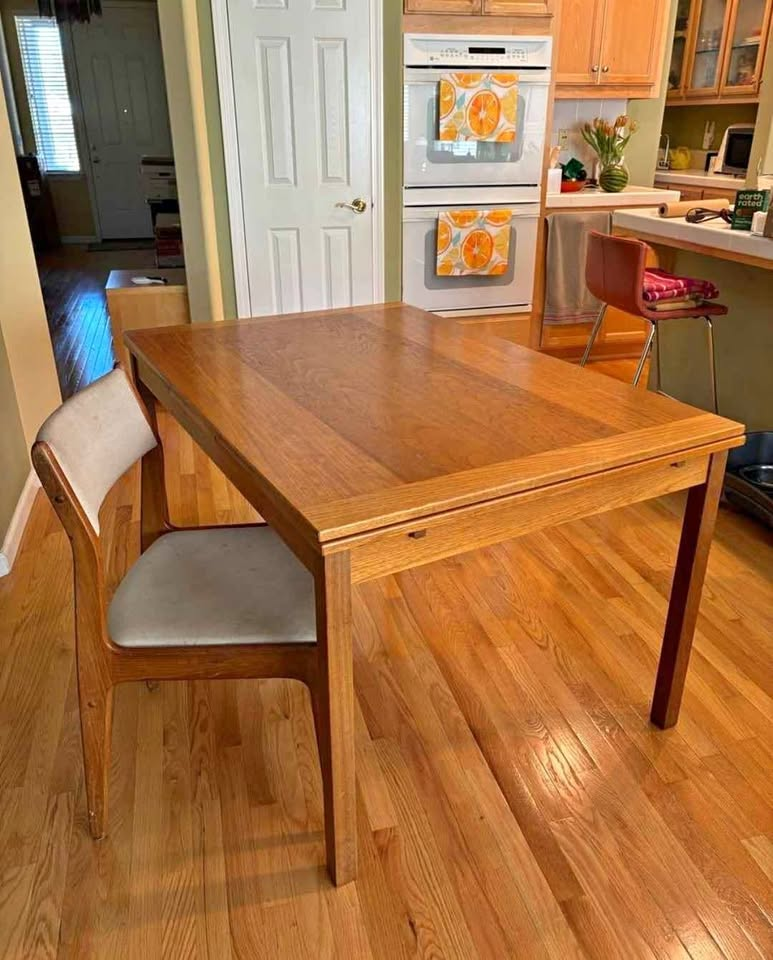
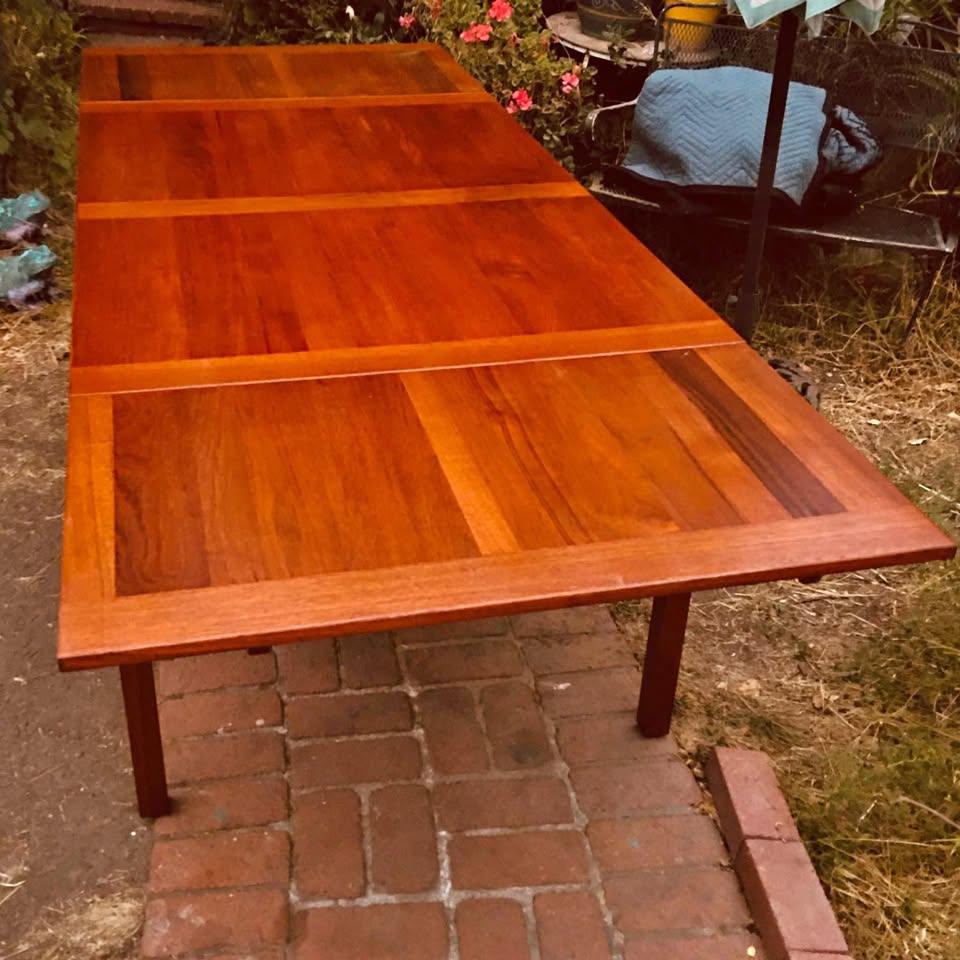
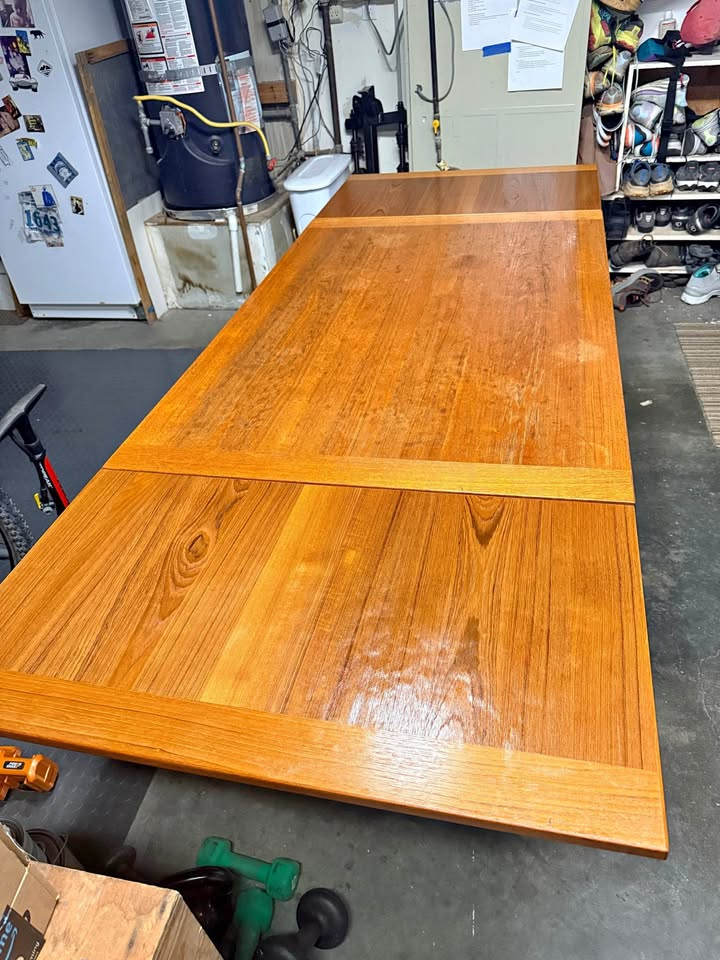
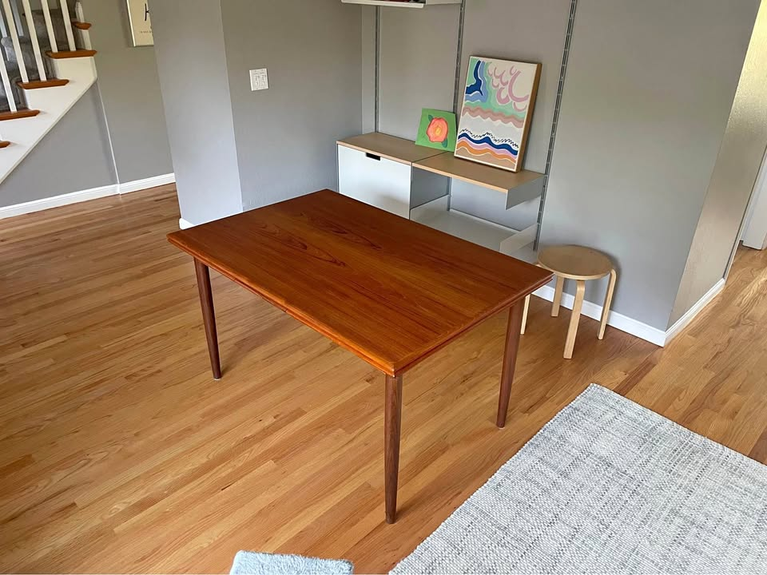

461 Anderson — Dining Table Watch
Mid-century modern · extendable to seat 8 · Danish teak/walnut preferred · driveable from the Bay Area
Updated August 16, 2026Current, click-verified, in-budget picks only · ★ value = price vs. quality
⚡ Look at right away
- 🏆 Two Ansager tables surfaced today — and they're the two cheapest things on the board. Ansager Møbler is on the priority-maker list, and until this morning the only one available was the $950 refinished SF table. Now there are two more, both under $700, both extending past 92".
- 🚨 Message the Santa Rosa one first — $450, stamped, 92". The seller photographed the maker's mark: Ansager Møbler #3205 64.01, Made in Denmark. 53" → 92", seats 10, four legs that unscrew for transport, matching-teak draw-leaves. She notes the table sells for $2,500 online. $450 is the lowest price a stamped Danish table has hit on this board — that will not last the weekend. View listing
- 🆕 Then the Petaluma one — $650, listed 16 hours ago, 93". The seller believes it's Ansager (their stamp is underneath but without the name) and it carries the Danish Control stamp. 53" → 93" on two 20" leaves with a self-levelling mechanism, seats 8–10, four legs. Cash only and he asks you to call or text rather than message — the number is in the listing. View listing
- How to think about the three Ansagers: $450 Santa Rosa (stamped, honest wear), $650 Petaluma (probable, longest at 93", top has small imperfections), $950 SF (confirmed, already refinished to like-new). If you're willing to oil and touch up a top yourself, the $450 is the buy. If you want to do nothing, pay the $950.
- ✅ Emeryville $950 now carded. Last run it was held back over a price contradiction and an unverified base. Both resolved: the disassembly photos clearly show four corner legs with an apron (no pedestal, no trestle), and the listing header price and the "asking $1250" line in the text are both under the ceiling — so the ambiguity no longer disqualifies it. At 94" it's the longest table here. Still amber: it has never been photographed assembled.
- Everything else held. Palo Alto $580 (table + 6 chairs), San Rafael $600, Walnut Creek $575 and Pleasanton $600 were all re-opened and are unchanged and active.
- Watchlist — clock running: the Gudme Møbelfabrik walnut expandable (priority maker, 63¼" → 101½", Folsom, delivery included) still reads $2,995 on the listing page — a search index keeps flashing $2,050, which is phantom. Over the $2,000 ceiling. Expires ~Aug 27 (11 days).
- Swept Craigslist + Facebook. New rule-outs this run: a Sacramento "MCM teak" ($925 — trestle base with a centre stretcher, and 72" fixed, doesn't extend at all), an Alameda "expansion table" ($1,250 — 60" + a 12" leaf = 72" max, and a laminated top), an SF square draw-leaf ($1,195 — 62", no extended length posted), and two SF "Danish MCM extendable" listings at $725 that are pedestal. Plus the standing DQs listed at the bottom.
Budget $1,000–$2,000 (table alone) · extends to ≥84" · Danish teak/walnut/rosewood · four legs (no pedestal/trestle)
Tables · in budget

Ansager Møbler Teak Draw-Leaf Dining Table
A stamped, numbered Ansager Møbler — a priority Danish maker — extending to 92" on four legs, for $450. Named Danish tables of this size normally start around $1,200 used; the seller herself notes it lists for $2,500 online. Nothing on this board comes close on price-to-piece.

Danish Modern Teak Expanding Dining Table — likely Ansager Møbler
A Danish-Control-stamped teak table that opens to 93" with a self-levelling leaf mechanism, for $650 — and it photographs beautifully extended. Half the price of the confirmed Ansager in SF for essentially the same table, minus the refinishing.

Vintage MCM Teak Dining Set — Table + 6 Chairs
A full solid-teak set — table plus six matching teak chairs — for $580, on four clean tapered legs. Since the budget is for the table alone, six chairs (worth ~$600–1,200) come essentially free. The only table here that solves the chairs problem too.

Vintage Danish Modern Teak Extension Table
A stamped Made in Denmark teak extension table that opens to 93", holding at $600 after last week's drop. It only slips behind the two Ansagers because the workshop is unnamed and the top has more wear.

Vintage Teak Extending Dining Table
A honey-teak draw-leaf table extending to 90" on four legs for $575, with nothing to fix and gorgeous book-matched grain. No named maker, which is the only thing keeping it out of the top three.

Mid-Century Modern Teak Dining Table
A warm-toned MCM teak table on four round tapered legs with slide-out extensions at both ends, reaching 90½". One long-term owner and photographed in a real room, so you can see exactly what you're getting; unbranded origin and one small blemish keep it off the podium.

Danish Modern Teak Draw-Leaf by Ansager Møbler
A confirmed Ansager Møbler, freshly refinished to like-new and extending to 93" — still good value at $950, but two other Ansagers turned up today at $450 and $650. You're paying roughly $300–500 for the refinishing already being done, which is a fair trade if you don't want a project.

Vintage Danish Teak MCM Expandable Dining Table
The longest table on the board at 94" extended, and honest Danish teak — but you're buying largely on trust. There is no photograph of it assembled, no maker mark, and the listing quotes two different prices, so the value rating is held down until you've seen it standing up.
New DQs this run: Sacramento "MCM teak" ($925) — trestle base with a centre stretcher and 72" fixed, doesn't extend. Alameda "expansion table" ($1,250) — 60" + 12" leaf = 72" max, and a laminated top. SF square draw-leaf ($1,195) — 62", no extended length given. Two SF "Danish MCM extendable" listings ($725) — pedestal. San Jose "Made in Denmark" conference table ($2,999) — over budget.
Ruled out (standing): Gudme rosewood expandable ($900, SF) — twin-pedestal base. Vejle Stole Møbelfabrik ($1,995, SF) — priority maker but only 76" extended. Dyrlund teak oval ($1,750, Hayward) — ceramic-tile top. Danish rosewood + Skovby-chair set ($1,450, Santa Rosa) — table only 71". Refinished Skovby ($2,950, SF) — pedestal + over budget. Novato built-in-leaf ($1,750) — trestle. Albany draw-leaf ($1,000, was $1,950) — only 67". Gangsø teak ($850, SF) — priority maker but ~63". Sebastopol ($500) and Sacramento ($525) square draw-leaves — no dimensions, almost certainly short. San Leandro refinished ($1,700) — clears 90" but unbranded and 3× the price of equivalent picks. Heywood-Wakefield ($895, Fremont) — American. Sonora sunburst ($2,000) — round + far. Børge Mogensen drop-leaf ($3,200, San Jose) — over budget. Meredew, McIntosh, Nathan, Remploy, G-Plan and other UK imports.
Watchlist: Gudme Møbelfabrik walnut expandable ($2,995 on the listing page; a search index keeps flashing $2,050 — phantom) — priority maker, 63¼" → 101½", Folsom, delivery included — but over the $2,000 ceiling. Expires ~Aug 27.
⚡ Chairs — quick read
- Two tables already solve this. The Palo Alto $580 table includes six matching teak chairs. And the $450 Santa Rosa Ansager seller will add four D-Scan teak chairs for $600 — so table + 4 chairs from one pickup is $1,050 total, though you'd still be two chairs short of eight.
- Best per-chair price: the Set of 8 D-Scan teak chairs (Richmond) holds at $1,000 — ~$125/chair, and eight is exactly what a 92–94" table wants. Every chair has its original D-Scan sticker. Click-verified active this run. Caveat: dated tan/rust geometric weave; budget ~$200–400 to recover all eight.
- No upholstery project: six Danish teak chairs, $1,000 from the same SF seller as the Ansager table — two captain's chairs plus four sides, already reupholstered. Pricier per chair, but nothing to do, and one pickup if you take that table.
Budget $1,200–$2,400 for six · MCM teak/walnut that coordinates with the table · easy, clean fabric · driveable / delivers
Chairs · sets of 6+ · in budget

Set of 8 D-Scan Teak Dining Chairs
Eight authenticated D-Scan teak chairs — original maker sticker under every one — at ~$125/chair, the best per-chair price on the board. Eight is the right number for the 92–94" tables above.

Six Danish Modern Teak Dining Chairs
Two captain's chairs plus four sides in solid teak with sculpted arched backs, already reupholstered in fresh fabric — so no recovering project. $167/chair is more than the D-Scan set, but you're paying for work already done, and it's the same seller as the SF Ansager table.
Worth knowing: the seller of the $450 Santa Rosa Ansager table will sell four D-Scan teak chairs for $600 alongside it — same family as the Richmond set, but only four, at $150 each. Fine as a starting point, not a solution for eight.
Seen but set aside: Set of 8 Danish teak in plain fabric, free delivery ($1,600, San Rafael) — sold / delisted. Set of 6 D-Scan teak ($1,200, Novato) — fewer chairs and pricier per chair than the set of 8 above. Six H.W. Klein for Bramin, refinished ($2,795, Richmond) and Johannes Andersen teak 6 ($2,650) — over the $2,400 ceiling. A Nathan teak 6 ($1,280, SF) — UK import. A floral-upholstered 6 ($2,400) — busy fabric.